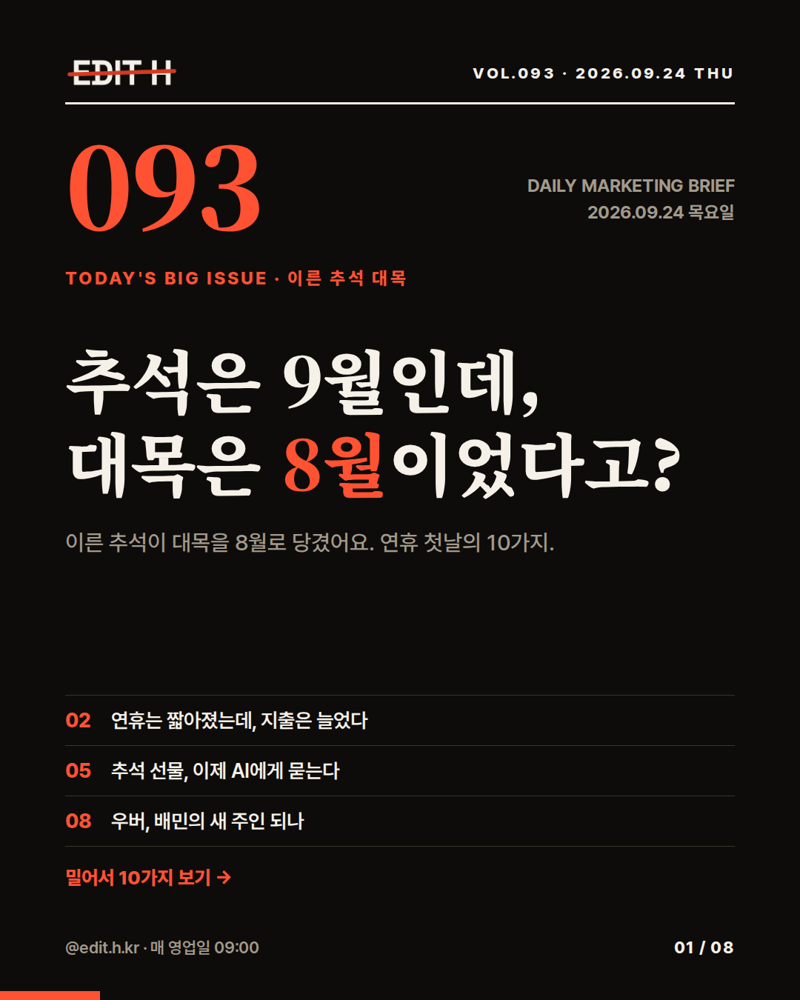
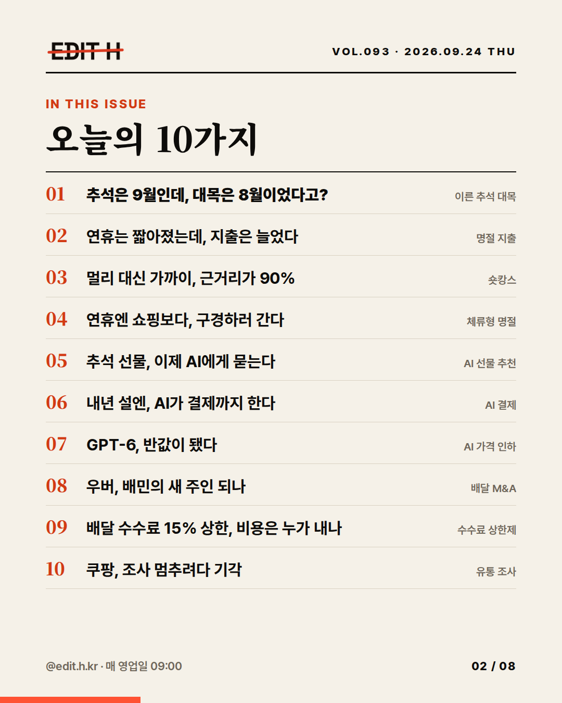
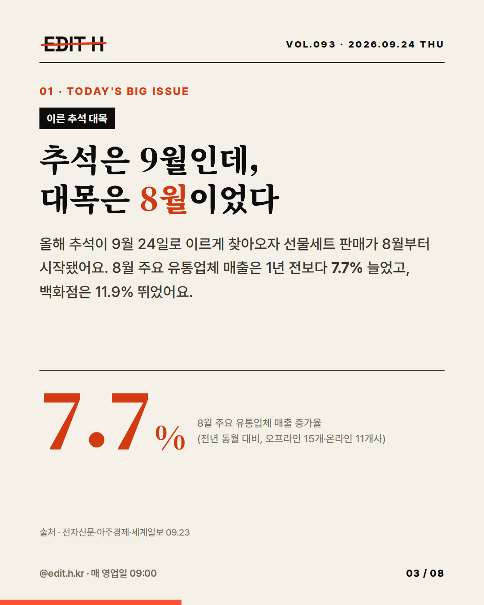
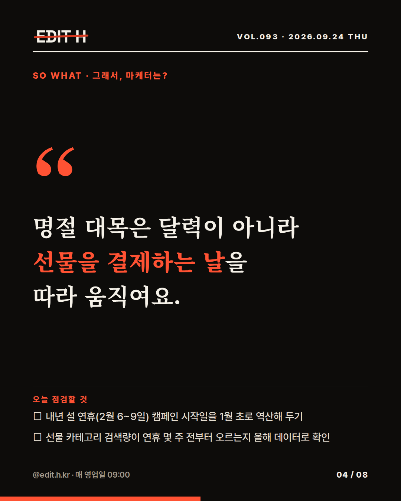
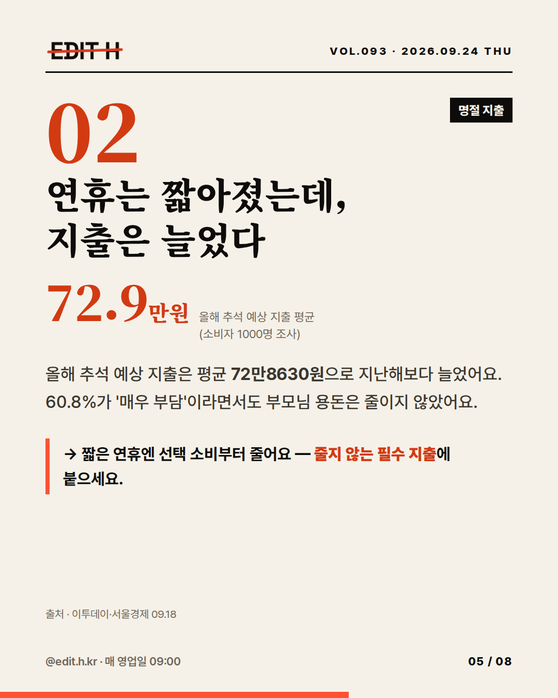
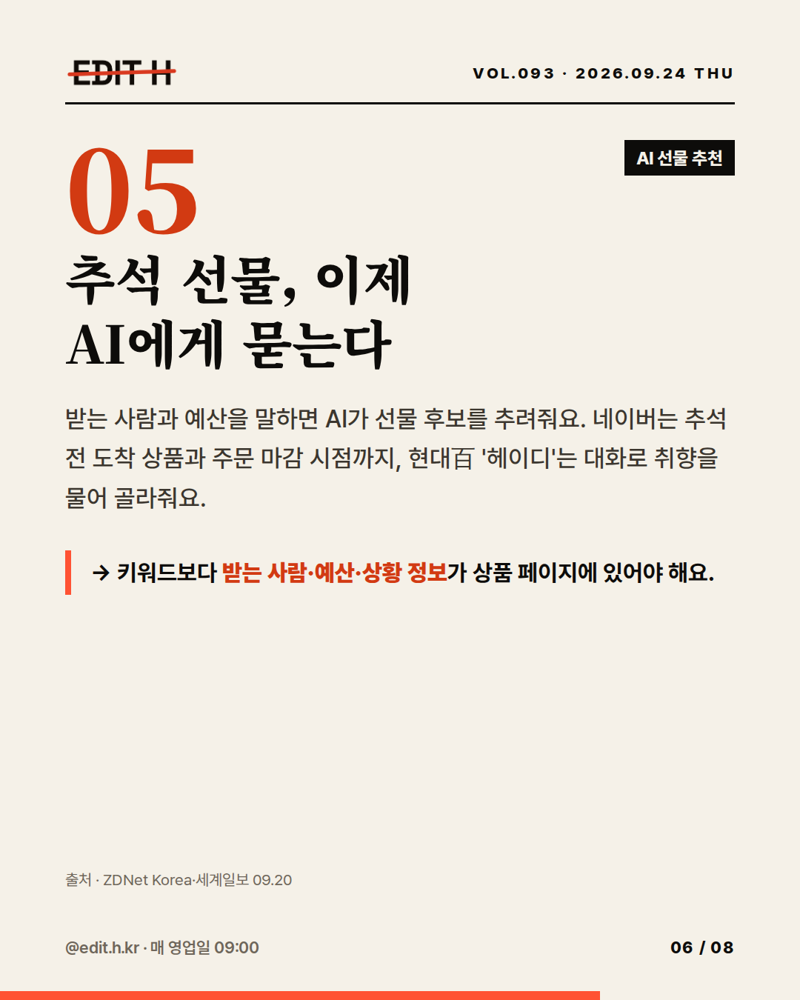
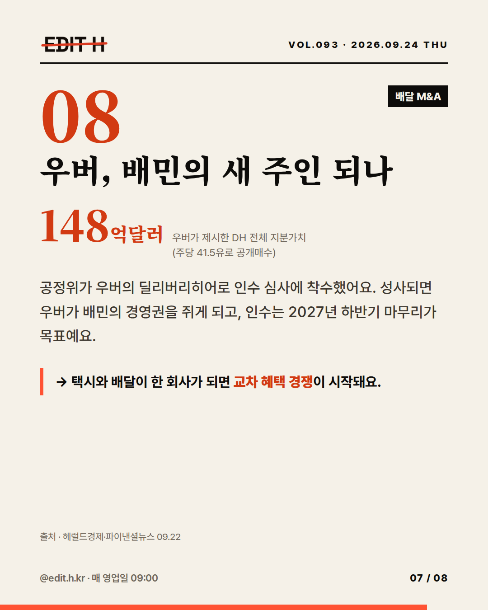
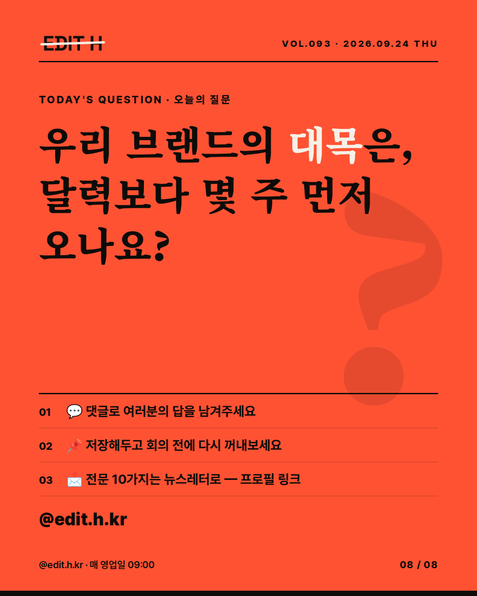

EDIT H · CARD NEWS · VOL.093
추석은 9월인데, 대목은 8월이었다고?








추석은 9월인데, 대목은 8월이었다고? 🌕 올해 추석이 이르게 찾아오면서 선물세트 대목이 8월로 당겨졌어요. 8월 주요 유통업체 매출은 1년 전보다 7.7% 늘었고, 백화점은 11.9% 뛰었어요. 짧아진 연휴가 바꾼 소비, AI가 쥐기 시작한 장바구니, 다시 쓰이는 배달 플랫폼 규칙까지 — 오늘의 10가지를 8장에 담았어요. 💬 여러분 브랜드의 '대목'은 달력보다 몇 주 먼저 오나요? 댓글로 알려주세요. 📩 매 영업일 아침 9시, 뉴스레터로 받아보세요 — 프로필 링크 #마케팅 #마케팅트렌드 #마케터 #추석마케팅 #명절마케팅 #유통트렌드 #AI커머스 #카드뉴스 #EDITH